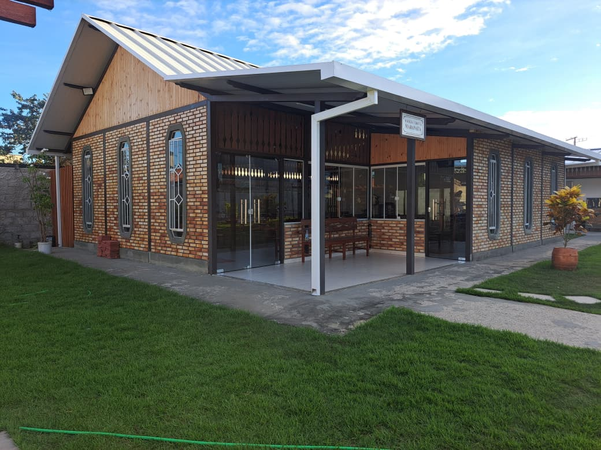
01
Fabricação e instalação de calhas
Calhas de alumínio sob medida, condutores e acabamento de telhas para uma drenagem discreta e eficiente.
Fabricação e instalação sob medida de calhas, rufos, condutores e pingadeiras em todo o Espírito Santo. Soluções que unem durabilidade, vedação e um acabamento limpo.
Conheça nossos serviços especializados em calhas, rufos, condutores e acabamentos. Cada projeto é feito sob medida para garantir vedação, durabilidade e um acabamento profissional.

Calhas de alumínio sob medida, condutores e acabamento de telhas para uma drenagem discreta e eficiente.
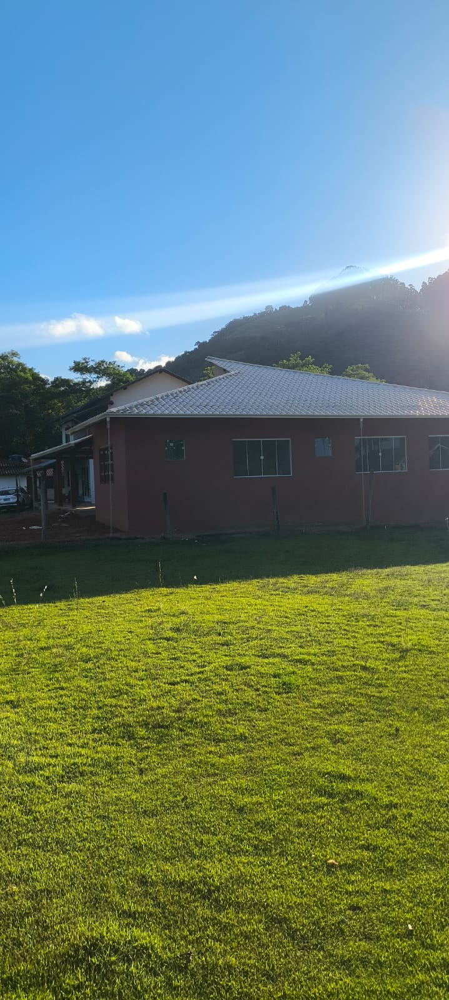
Solução funcional e decorativa para conduzir a água com leveza visual em varandas, jardins e fachadas.
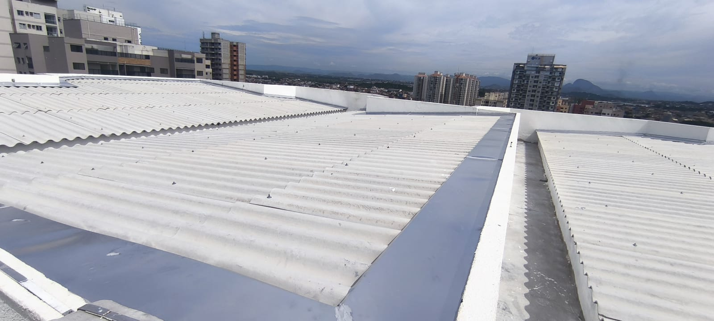
Proteção técnica em encontros de paredes, telhados e coberturas para reduzir risco de infiltração.
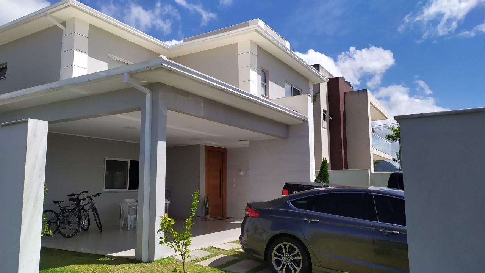
Sistema completo para captar a água do telhado e direcionar o fluxo até o ponto correto de descarte.
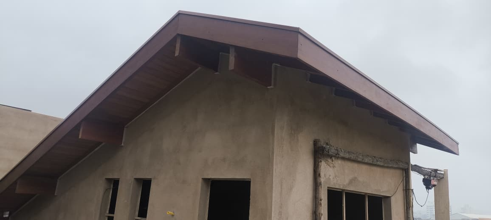
Finalização das bordas do telhado para melhorar vedação, alinhamento e leitura visual da cobertura.
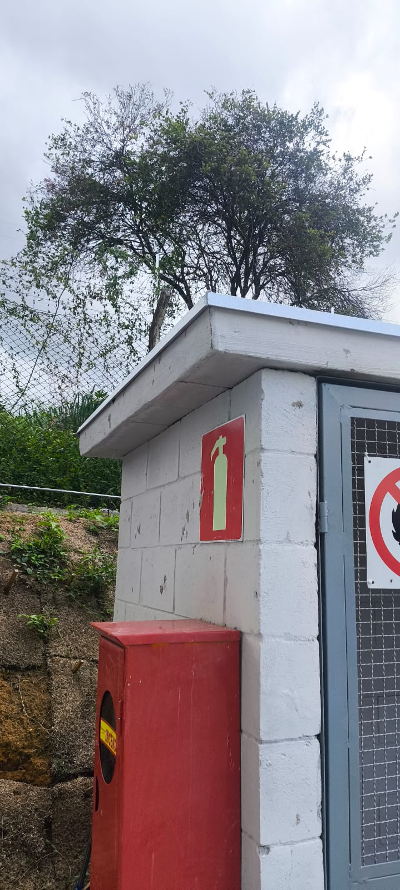
Acabamento para muros, platibandas e beirais que evita escorrimento, manchas e umidade nas paredes.
Clique na imagem para ampliar e ver os detalhes de perto
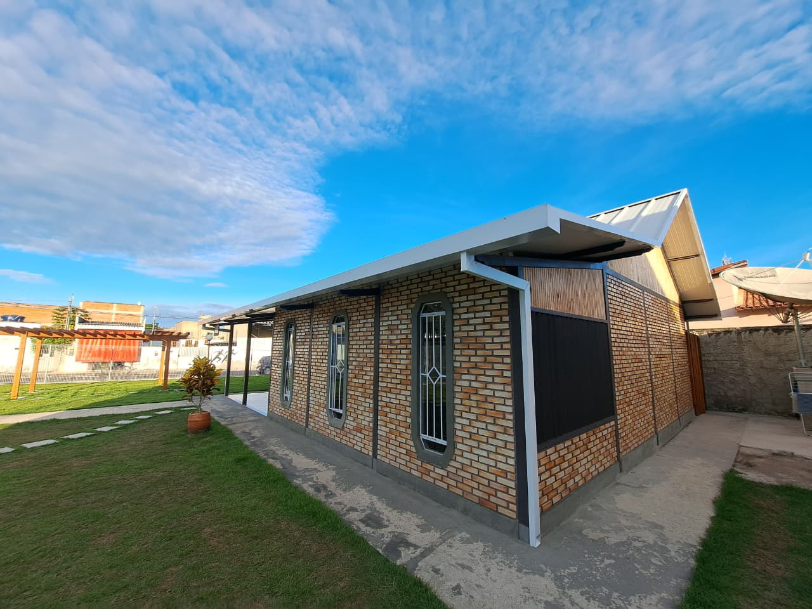
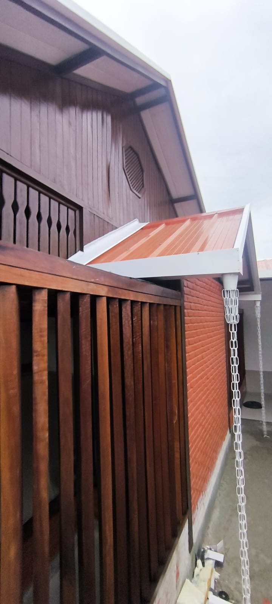
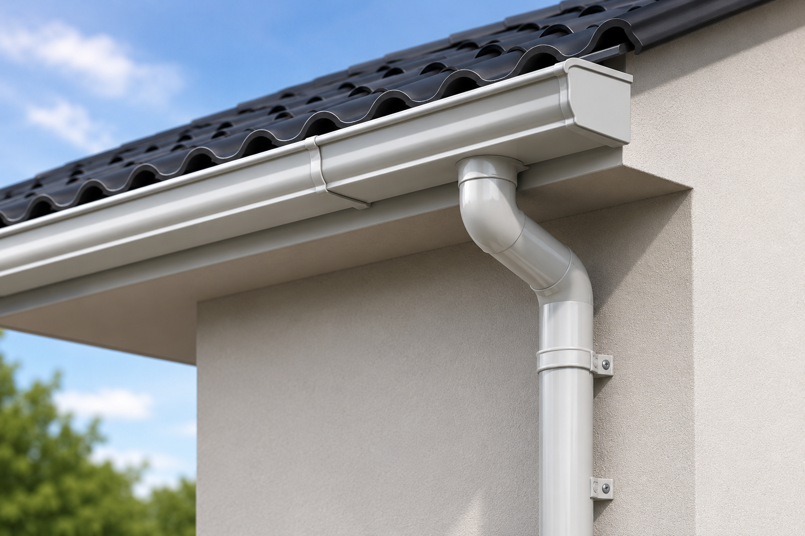
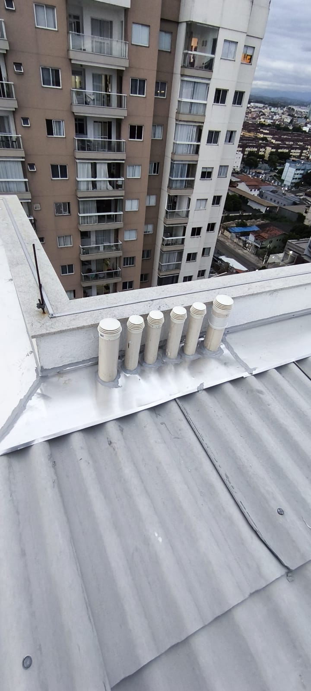
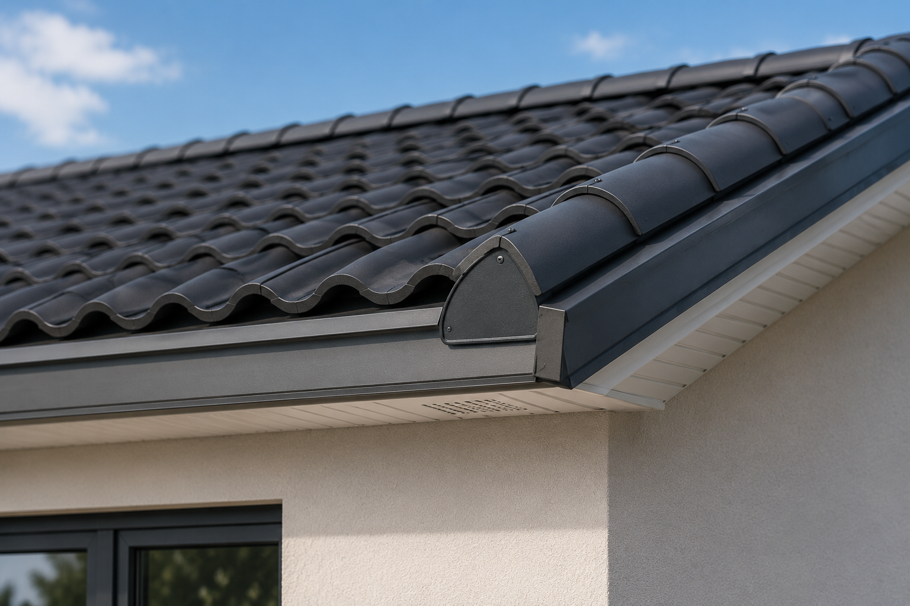
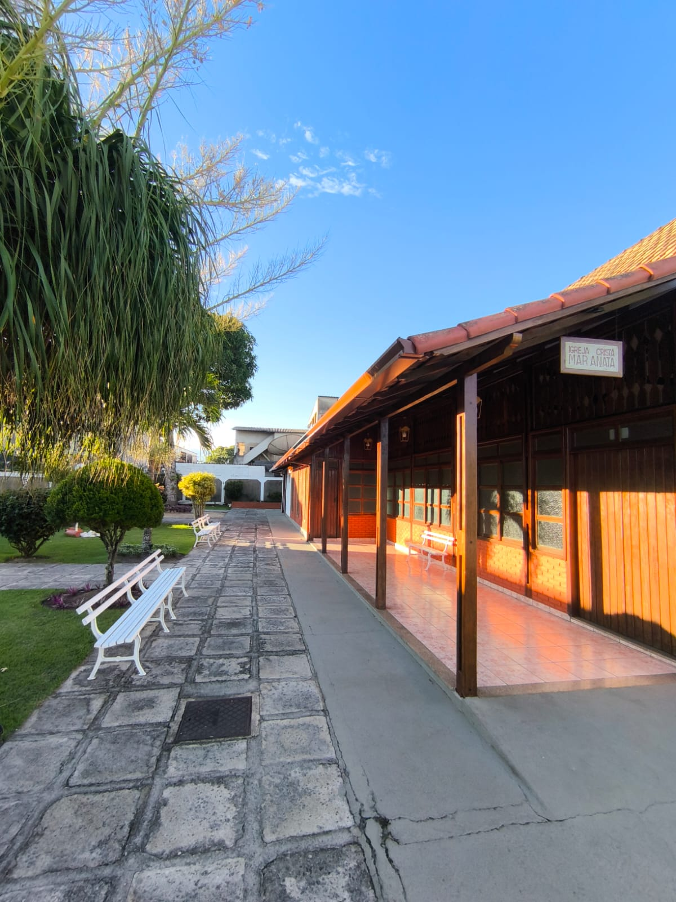
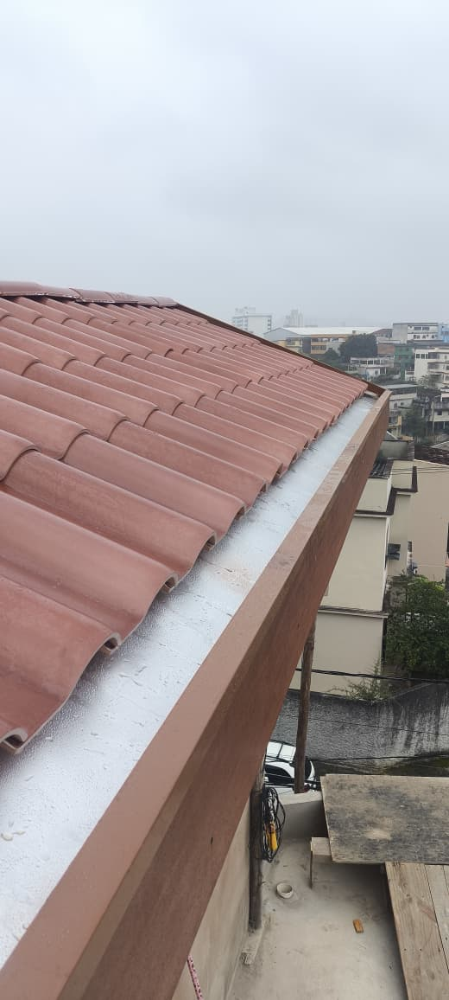
A história da HD Calhas começou muito antes da sua fundação. Desde 2010, atuamos no mercado de fabricação e instalação de calhas, acumulando experiência, conhecimento técnico e a confiança de inúmeros clientes.
Após mais de uma década de dedicação e aperfeiçoamento constante, em 2022 nasceu a HD Calhas, uma empresa independente, construída com muito trabalho, determinação e o sonho de oferecer soluções ainda mais completas e eficientes para nossos clientes.
Desde então, temos nos destacado pela qualidade dos materiais, excelência na execução dos serviços e compromisso com cada projeto realizado. Atuamos com fabricação e instalação de calhas, rufos, condutores e soluções personalizadas para proteção e drenagem de imóveis residenciais, comerciais e industriais.
Nosso crescimento é resultado da combinação entre experiência, inovação e atendimento próximo ao cliente. Cada serviço executado reflete os valores que nos acompanham desde o início: responsabilidade, transparência, qualidade e respeito.
Hoje, a HD Calhas segue fortalecendo sua presença no mercado, investindo em tecnologia, qualificação profissional e melhoria contínua, sempre com o propósito de entregar soluções duráveis, seguras e de alto padrão.
HD Calhas: experiência desde 2010, independência desde 2022 e compromisso com a excelência todos os dias.
Solicitar orçamentoEnvie fotos do local pelo WhatsApp e receba orientação para calhas, rufos, condutores, pingadeiras ou acabamento de telha.